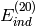
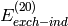

Don’t solve the CPHF equations, evaluate  and  instead of their response-including counterparts. Only turn on this option if you are not going to use the induction energy.
Enter search terms or a module, class or function name.